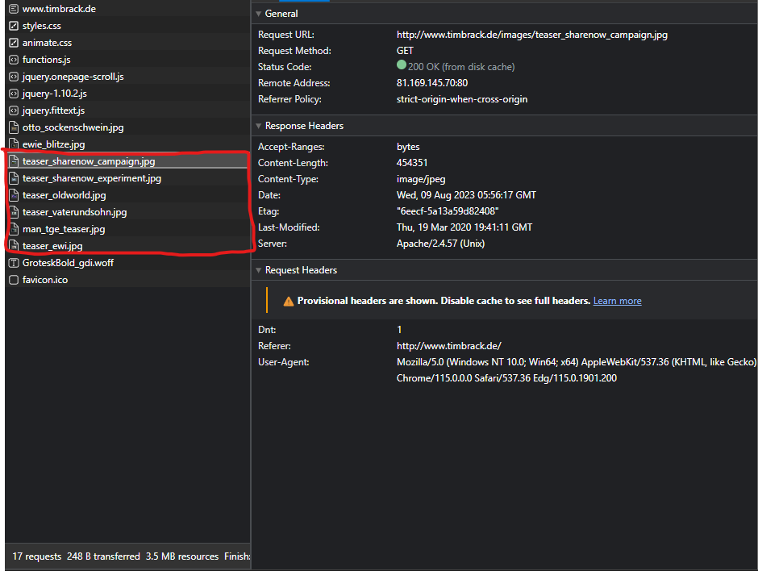

Highschool Web Development
How is a web page downloaded?
We are going to look at the process of downloading a website from www.timbrack.de.
- 1 - The webpage is initially requested for download from http://www.timbrack.de. This is done using the GET method as seen in the right image. This is just grabbing the HTML for the webpage, not the CSS styling.
- 2 - The CSS file is then requested and downloaded from http://www.timbrack.de/css/styles.ss. This is vital for the formatting of the website. Without this, the website would be displaye linearly with default font etc.
- 3 - Another CSS file is then requested from http://www.timbrack.de/css/animate.css. This CSS file is used for the animations of the webpage.
- 4 - The next 4 files that are requested are Javascript files. Javascript is an advanced programming language that makes web pages more interactive and dynamic.
- 5 - The next file that is requested is an image file requested from http://www.timbrack.de/images/ otto_sockenschwein.jpg If you click on the link, you will be taken directly to the image where you can download it for yourself.
- 6 - Another image file is then requested from http://www.timbrack.de/images/ewie_blitze.jpg
- 7 - Six more images are then requested for download to be used on the webpage.
- 8 - A .woff file is then requested for download. This is a font file that is used to format text on the webpage.
- 9 - An icon file is then requested for download. This is used as the webpage's icon which is seen at the start of the tab in a consumers web-browser.
- This is the basic process of how a webpage is downloaded. Resources that are required for the website to load and be formatted correctly are individually requested and downloaded linearly.
{kind=link}
{kind=link}
1.
2.
3.
4.
5.
6.
7.
8.
9.